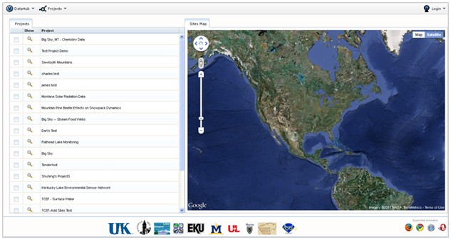
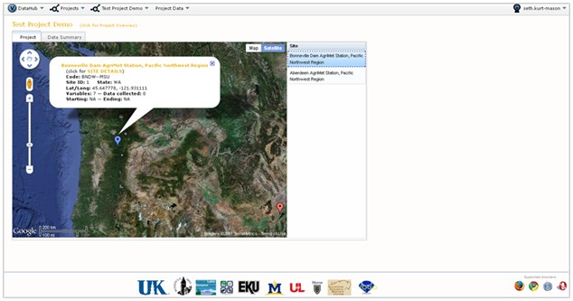
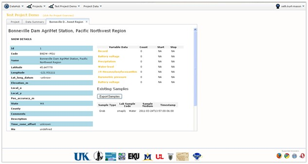
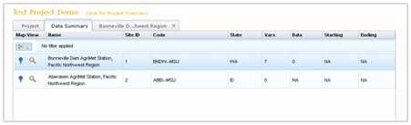
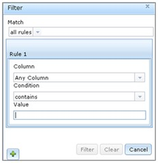

This section will show you how to browse among the projects stored in VOEIS, explore the sites within a given project, and investigate the data types and variables associated with individual sites.
The Project_Browse page (shown below) lists all of the projects stored within VOEIS. The list can be sorted alphabetically by clicking the header box at the top labeled “Project”. To browse data within a single project, simply click the magnifying glass icon located to the left of the project name.

You will be directed to the Project_Show page for the project you selected. A map of all of the project sites will appear on the left side of the screen, and a site list will appear on the right side of the map. The site list can be sorted alphabetically by clicking on the header box. Clicking on a site location on the project map or on a site name in the site list will open a callout that displays some of the metadata associated with that site.

To see a more complete list of metadata, click on “Site Details” in the callout. A new (Site_Name) tab for the selected site will open in the map window (see below). This tab displays site location metadata, a list of variables associated with the site, and an option for exporting all of the data values associated with the site.

Clicking on individual variable names displayed in the (Site_Name) tab will create a new tab for that variable. This (Variable_Name) tab displays the metadata associated with the selected variable.
You can also browse among sites by opening the “Data Summary” tab. This tab provides a list of site names, IDs, Codes, the state where the site is located, the number of variables associated with the site, the number of data points saved to the site, and the date of the earliest and latest record. This list can be sorted by clicking on the table header boxes.

Another option for sorting the site list is to apply custom filters. To do this, click the small button with the yellow arrow located in the upper left. This button calls the pop-out window below. Custom filtering rules are described using Boolean logic and applied to either a single column or multiple columns.

When you return to the site list, you can click the magnifying glass icon next to a site name to open a new (Site_Name) tab containing the site metadata. Repeating this process for multiple sites simply adds new (Site_Name) tabs to the window.
Copyright © 2011, Montana State University
Created with the Freeware Edition of HelpNDoc: Easily create CHM Help documents